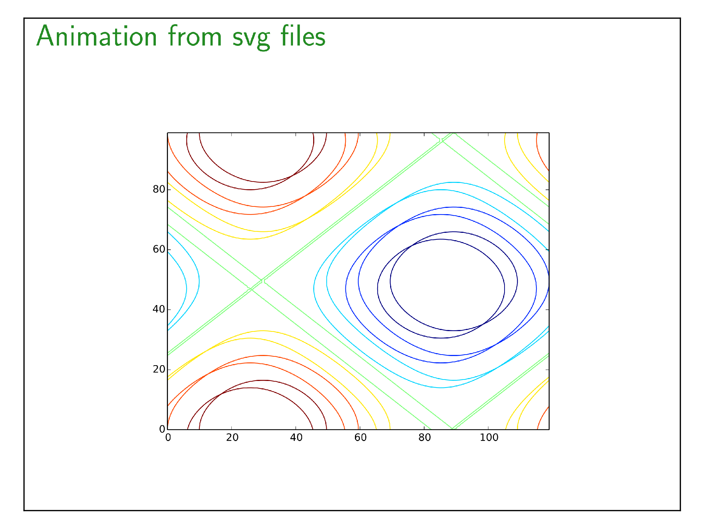

animatesvg
Create animation from a list of svg files or a list of matplotlib figures.
From svg file list
from beampy import *
# Remove quiet=True to get beampy compilation outputs
doc = document(quiet=True)
with slide('Animation from svg files'):
animatesvg("./ressources/svg_anims/*.svg", width="600")
display_matplotlib(gcs())

HTML output
Module arguments
-
class
beampy.animatesvg(files_in, **kwargs)
Create svg animation from a folder containing svg files (or any files that
figure function can handle) or a list of matplotlib figures.
| Parameters: |
- files_in (str or list of matplotlib figures or list of file names) – List of figures to animate. List could be generated using a string
containing UNIX willcard like ‘/my/folder/*.svg’, or using a list of
file names or matplotlib figure object.
- x (int or float or {'center', 'auto'} or str, optional) – Horizontal position for the animation (the default theme sets this to
‘center’). See positioning system of Beampy.
- y (int or float or {'center', 'auto'} or str, optional) – Vertical position for the animation (the default theme sets this to
‘auto’). See positioning system of Beampy.
- start (integer, optional) – Start position of the image sequence (the default theme sets this to
0).
- end (int or 'end', optional) – End position of the image sequence (the default theme sets this to
‘end’, which implies that the animation end at the last item of the
files_in ).
- width (int or float or None, optional) – Width of the figure (the default is None, which implies that the width
is width of the image).
- fps (int, optional) – Animation frame-rate (the default theme sets this to 25).
- autoplay (boolean, optional) – Automatically start the animation when the slide is shown on screen
(the default theme sets this to False).
|
|---|
Gallery generated by Sphinx-Gallery